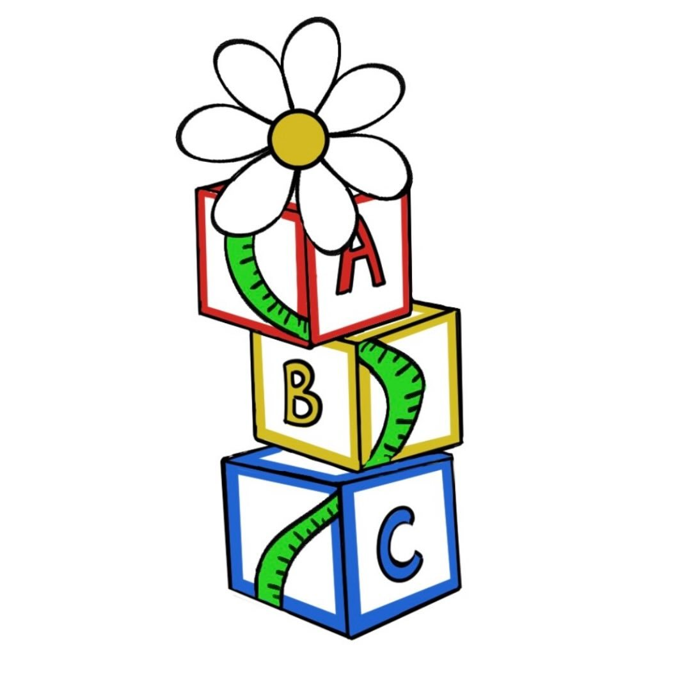

Want to bring plantingSTEMs to your community?
Starting a chapter is one of the biggest ways to grow plantingSTEMs' impact. Here's what it takes, what to expect, and how to apply.
Starting a chapter, step by step.
Apply
Fill out our chapter application below telling us about your school or community and why you want to start a chapter.
Get Approved
Our leadership team reviews applications and follows up with next steps, resources, and a welcome call.
Build Your Team
Recruit a small leadership group at your school or in your community to help plan and run activities.
Host Your First Workshop
We'll help you plan and launch your very first plantingSTEMs workshop using our activity guides.

Chapters are a real commitment — and a real reward.
Starting a chapter allows students to lead STEM outreach in their own communities while developing leadership, communication, and project management skills.
- Recruit and lead a team of student volunteers.
- Organize and host STEM workshops throughout the school year.
- Communicate with schools and community organizations.
- Participate in leadership meetings and chapter check-ins.
- Represent plantingSTEMs within your school and community.
- Help grow STEM opportunities for younger students.
Chapter FAQs
Any student, parent, or teacher passionate about hands-on science education can apply — chapters have started at schools, libraries, and community centers.
No — plantingSTEMs chapters are free to start. We'll help connect you with resources and low-cost supply lists for workshops.
Most chapters host one workshop per season (about 3–4 per year), plus occasional planning meetings. It's flexible and designed to fit around school schedules.
We provide activity guides, supply checklists, promotional templates, and a direct line to our leadership team for questions and support.
Chapter Application
Ready to bring plantingSTEMs to your school or community? Fill out the application below to get started.